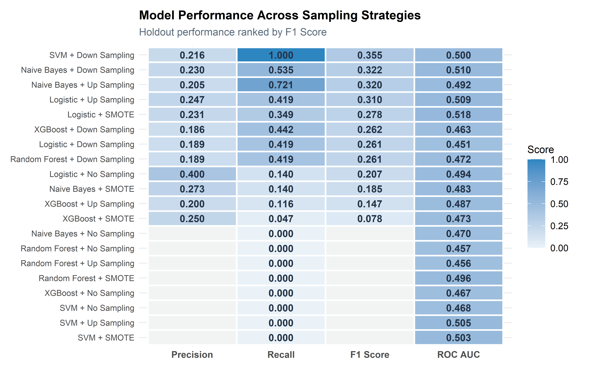
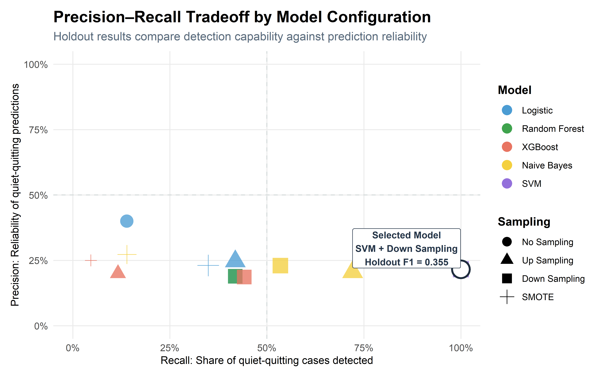
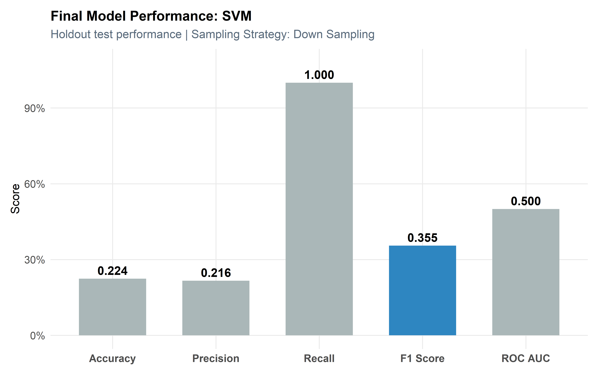
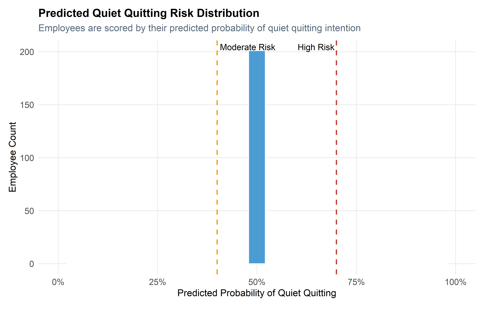
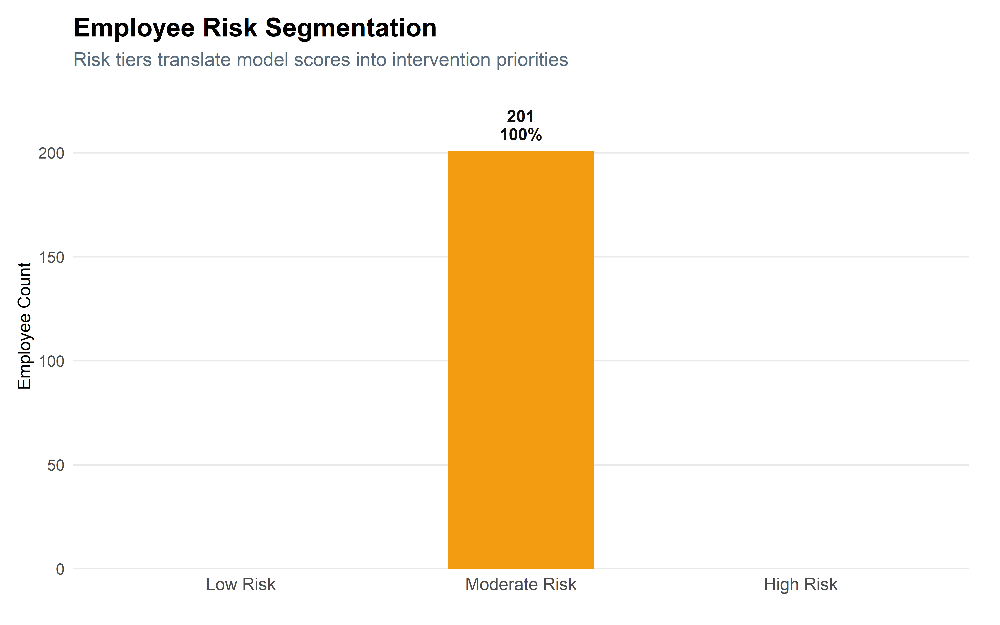

Quiet Quitting Modeling
This section develops and evaluates predictive models to identify employees at risk of quiet quitting, interpret key disengagement risk patterns, and translate model outputs into executive-level engagement recommendations.
Executive Summary
This analysis develops a predictive modeling framework to identify employees at risk of quiet quitting using a synthetic, research-informed HR dataset.
Multiple machine learning models—including Logistic Regression, Random Forest, XGBoost, Support Vector Machines, and Naive Bayes—were evaluated under varying sampling strategies to address class imbalance and improve predictive performance.
Results show that model effectiveness is driven as much by data strategy as algorithm selection. Sampling strategies such as up-sampling, down-sampling, and SMOTE changed model behavior in meaningful ways, demonstrating that class-balancing choices can materially affect precision, recall, and F1 Score.
The final model-selection process uses cross-validated F1 Score to identify strong candidate configurations, with holdout performance used as a stability check to confirm whether those candidates remain practically usable on unseen data.
Rather than relying on a single predictive signal, quiet-quitting risk is influenced by a combination of behavioral, organizational, wellbeing, and perception-based factors, including engagement, burnout, role clarity, managerial support, and discretionary effort.
From a business perspective, this framework enables a shift from reactive disengagement response to proactive workforce engagement management, supporting earlier intervention, better resource allocation, and improved employee experience outcomes.
Modeling Overview
This section builds on the exploratory analysis by applying predictive modeling techniques to identify employees at risk of quiet quitting.
Rather than relying on a single model, multiple algorithms are evaluated and compared to determine the most effective approach for workforce decision-making.
Each model is assessed using cross-validation and evaluated across multiple sampling strategies to address class imbalance.
The objective is not only to identify the most accurate model, but to determine which approach best aligns with organizational priorities.
Data Preparation & Modeling Framework
Target Definition
The target variable for this analysis is quiet quitting, representing whether an employee is likely to demonstrate disengagement behavior while remaining employed.
This binary outcome is structured as a classification problem, with levels defined as “No” (not flagged for quiet quitting) and “Yes” (at risk of quiet quitting). Establishing a consistent target structure ensures that all models are trained and evaluated under the same conditions.
Data Partitioning
To evaluate model performance objectively, the dataset is split into training and testing subsets.
The training set is used to fit and tune models, while the test set is reserved for final evaluation. Stratified sampling is applied to preserve the original class distribution of quiet quitting intention, ensuring that model performance reflects realistic conditions.
Feature Engineering Pipeline
A standardized preprocessing pipeline is applied to ensure consistency across all models.
Categorical variables are converted into numeric representations using dummy encoding, and numeric variables are normalized to improve model stability—particularly for algorithms sensitive to scale, such as Logistic Regression and Support Vector Machines.
Additionally, zero-variance predictors are removed to prevent redundant or non-informative features from influencing model performance.
Cross-Validation Strategy
Cross-validation is used to evaluate model performance during training and reduce the risk of overfitting.
By partitioning the training data into multiple folds, each model is evaluated across different subsets of the data. This provides a more robust estimate of model performance compared to a single train-test split.
Model Development
Each model is implemented using a consistent preprocessing pipeline, ensuring that performance differences are driven by the modeling approach rather than data preparation.
- Logistic Regression (baseline, interpretable)
- Random Forest (ensemble tree-based)
- XGBoost (boosted trees for performance)
- Support Vector Machine (nonlinear classification)
- Naive Bayes (probabilistic baseline)
This allows for a fair comparison across algorithms with varying levels of complexity and interpretability.
Model Pipelines
Workflows are used to combine preprocessing steps and model specifications into a single pipeline.
This ensures that all transformations are applied consistently during both training and prediction, reducing the risk of data leakage and simplifying model management.
Evaluation Metrics
Model performance is evaluated using a combination of classification metrics.
Accuracy provides an overall performance measure, while precision and recall capture trade-offs between false positives and false negatives. The F1 Score balances these two metrics, and ROC AUC evaluates the model’s ability to distinguish between classes.
Using multiple metrics ensures a comprehensive evaluation aligned with business priorities.
Hyperparameter Tuning
For models with tunable parameters, grid search is used to identify optimal configurations.
This process evaluates multiple parameter combinations using cross-validation, selecting those that maximize predictive performance. Tuning helps improve model accuracy while maintaining generalizability.
Model Training
Multiple supervised learning models were evaluated, including Random Forest, XGBoost, Support Vector Machines, Logistic Regression, and Naive Bayes.
Each model and sampling strategy combination was evaluated through cross-validation. Tunable models were optimized separately within each sampling condition, ensuring that model selection reflects the combined effect of algorithm choice, preprocessing, and class-balancing strategy.
Rather than focusing on individual model outputs, performance is summarized comparatively to highlight relative strengths across modeling approaches.
Model Evaluation
This section evaluates how each model performs on unseen data and determines which approach is most suitable for real-world workforce decision-making.
Rather than focusing solely on accuracy, evaluation emphasizes the precision–recall tradeoff, balancing the ability to detect at-risk employees with the cost of unnecessary intervention.
This ensures model selection aligns with operational priorities, where both detection capability and decision efficiency matter.
Key metrics include:
- Accuracy → Overall correctness
- Precision → Reliability of positive
predictions
- Recall → Ability to detect at-risk employees
- F1 Score → Balance between precision and
recall
- ROC AUC → Overall classification strength
This comparison highlights the trade-offs between detection, prediction reliability, and practical intervention burden.
Test Set Performance
Final model performance is evaluated on the holdout test dataset.
This step provides an unbiased assessment of how each model performs on unseen data, ensuring that results reflect real-world predictive capability rather than training performance.
The evaluation framework compares each model and sampling strategy combination using cross-validation, then confirms the selected model on the holdout test set. This separates model selection from final performance confirmation and provides a more defensible assessment of how the model is likely to generalize.
Sampling Strategy Framework
Sampling techniques are applied within the preprocessing pipeline to ensure consistency across models.
By integrating sampling directly into the workflow, transformations are applied only to the training data, preventing data leakage and preserving the integrity of model evaluation.
Sampling Recipes and Evaluation Setup
Each sampling strategy is embedded directly into the modeling recipe. This ensures that class balancing occurs only within the training folds during cross-validation, preventing leakage into validation or test data.
Model Evaluation Results & Insights
This section synthesizes model performance across sampling strategies and evaluation metrics, providing a comparative view of how different approaches perform under realistic conditions.
The focus shifts from individual model behavior to cross-model insights, highlighting trade-offs that directly impact workforce decision-making.
The goal is to identify a model that balances detection capability with operational efficiency—minimizing both missed risk and unnecessary intervention.
Sampling Strategy Comparison
Class imbalance is a major challenge in quiet quitting prediction, as fewer employees typically fall into the “Yes” category.
To address this, multiple sampling strategies were applied:
- No Sampling (baseline)
- Up Sampling (increase minority class)
- Down Sampling (reduce majority class)
- SMOTE (synthetic minority generation)
The goal is to understand how balancing the dataset impacts model performance.

The sampling comparison shows that quiet quitting model performance changes meaningfully depending on how class imbalance is handled. Some configurations improve recall, while others preserve precision or overall discrimination.
In this analysis, several configurations performed strongly during cross-validation but weakened on the holdout test set. This reinforces why model selection should not rely on one metric or one evaluation split. The final recommendation therefore uses cross-validation to identify promising candidates, then uses holdout performance to confirm whether those candidates remain practically useful on unseen data.
For quiet quitting, the results suggest that prediction is more challenging than turnover intention. The model should therefore be interpreted as an early-warning prioritization tool rather than a definitive classifier.
Precision–Recall Curve Analysis

The precision–recall view shows how each finalized configuration performs on the holdout test set after cross-validation and tuning. Configurations farther to the right detect more quiet-quitting cases, while configurations higher on the chart produce more reliable positive predictions.
For this target, the holdout results show a difficult tradeoff: models that detect more potential quiet-quitting cases may also produce less reliable positive predictions. This is why the selected model should be interpreted as a prioritization screen rather than a definitive classifier.
The selected configuration is highlighted on the plot. It was not chosen from holdout results alone; it was chosen through a two-step process that compares cross-validated performance and then confirms that the selected workflow remains practically usable on unseen data.
Decision Matrix & Model Comparison
| Cross-Validated Model Decision Matrix | ||||||
| Top configurations ranked by cross-validated F1 Score | ||||||
| Model | Sampling | Accuracy | Precision | Recall | F1 | ROC_AUC |
|---|---|---|---|---|---|---|
| Random Forest | No Sampling | 0.788 | 0.788 | 1.000 | 0.882 | 0.496 |
| Random Forest | Up Sampling | 0.788 | 0.788 | 1.000 | 0.882 | 0.529 |
| Random Forest | SMOTE | 0.787 | 0.787 | 1.000 | 0.881 | 0.527 |
| XGBoost | No Sampling | 0.787 | 0.787 | 1.000 | 0.881 | 0.517 |
| XGBoost | Down Sampling | 0.787 | 0.787 | 1.000 | 0.881 | 0.500 |
| Naive Bayes | No Sampling | 0.787 | 0.787 | 1.000 | 0.881 | 0.538 |
| SVM | No Sampling | 0.787 | 0.787 | 1.000 | 0.881 | 0.499 |
| SVM | Up Sampling | 0.787 | 0.787 | 1.000 | 0.881 | 0.496 |
| SVM | SMOTE | 0.787 | 0.787 | 1.000 | 0.881 | 0.476 |
| XGBoost | SMOTE | 0.776 | 0.791 | 0.973 | 0.872 | 0.522 |
| Logistic | No Sampling | 0.727 | 0.790 | 0.890 | 0.837 | 0.543 |
| XGBoost | Up Sampling | 0.721 | 0.783 | 0.892 | 0.834 | 0.509 |
The cross-validated decision matrix ranks model configurations by F1 Score, showing which combinations performed strongest during resampling. Several configurations may appear highly competitive during cross-validation, especially when recall is high.
However, cross-validation alone is not sufficient for final selection. Because quiet quitting is a behavioral and perception-based outcome, a model can perform strongly during resampling but still weaken when applied to the holdout test set.
For this reason, the final model is selected using a two-step rule: first, configurations are evaluated using cross-validated F1 Score; second, the leading candidates are checked against holdout performance to confirm that they still produce usable positive-class predictions on unseen data.
Model Selection
Model selection was guided by practical decision tradeoffs rather than raw performance alone.
For quiet quitting prediction, the cost of missing a disengagement signal must be balanced against the cost of unnecessary follow-up. A model with very high recall may identify more potential quiet-quitting cases, but it can also create operational noise by flagging too many employees. A model with higher precision may reduce false alarms, but it may fail to detect enough meaningful disengagement risk.
For this reason, cross-validated F1 Score was used as the primary model-selection metric because it balances precision and recall while reducing the risk of selecting a model based on one favorable test split.
However, cross-validation alone is not enough. The holdout test set is also used as a stability check to confirm that the selected model produces usable positive-class predictions on unseen data.
In this run, the recommended configuration was SVM with Down Sampling. The model should be interpreted as a risk prioritization tool, meaning it helps identify employees or workforce segments that may warrant earlier engagement review, while leaving final decisions to HR leaders, managers, and organizational context.
The chart below reports the selected configuration’s final holdout performance. These values should be interpreted as practical confirmation metrics rather than proof of definitive individual-level prediction.
Selected Model Holdout Performance

Risk Distribution
The risk distribution shows how the selected model assigns quiet-quitting risk probabilities across the holdout test set. These scores should be interpreted as prioritization signals rather than definitive classifications.
Because quiet quitting is a behavioral and perception-based outcome, probability thresholds should be calibrated carefully. In practice, organizations would adjust risk thresholds based on HR capacity, intervention cost, employee-relations sensitivity, and tolerance for missed disengagement risk.

Risk Segmentation

The segmentation view translates model probabilities into practical intervention tiers. If employees cluster heavily within one tier, that does not mean the model is wrong; it means the thresholds may need to be calibrated for the organization’s decision context.
For quiet quitting, these tiers should be treated as engagement-prioritization signals. Low-risk employees may require normal engagement maintenance, moderate-risk employees may warrant trend monitoring, and high-risk employees may warrant earlier manager or HR review.
Final Model Summary & Key Takeaways
The selected model represents the most practical configuration after comparing cross-validated performance with holdout test behavior. For quiet quitting, this distinction matters because some configurations performed strongly during resampling but weakened when applied to unseen data.
While the absolute holdout performance values remain moderate, the model is still useful as a risk prioritization tool because it helps rank employees by relative likelihood of quiet quitting intention. This distinction is important: the model should not be used to make automatic employment decisions. Instead, it supports earlier review, targeted engagement conversations, and more focused workforce planning.
📊 Key Takeaways
SVM
Optimized using Down Sampling with a focus on F1 Score
Why This Model Was Selected
Why This Model Was Selected
The final model was selected using a two-step process: cross-validation identified strong candidate configurations, and the holdout test set confirmed whether those candidates remained practically usable on unseen data.
In this run, the selected configuration was SVM with Down Sampling. It achieved a cross-validated F1 Score of 0.707, while its holdout test results produced precision of 0.216, recall of 1, and F1 Score of 0.355.
No configuration met the full holdout stability screen, so the selected model is the strongest viable holdout performer among cross-validated candidates.
Because quiet quitting is a behavioral risk signal rather than a directly observable event in this synthetic dataset, predictions should be treated as prompts for further HR or manager review, not as standalone conclusions about employee behavior.
Selected Model Performance Metrics
The table below reports holdout test performance for the selected configuration. These values should be interpreted as final confirmation metrics, not as standalone proof that the model is definitive. For quiet quitting, the model is most useful for prioritization and early review rather than individual-level certainty.
| Selected Model Performance Summary | |
| Holdout test performance for SVM with Down Sampling | |
| Metric | Score |
|---|---|
| Accuracy | 0.224 |
| Precision | 0.216 |
| Recall | 1.000 |
| F1 Score | 0.355 |
| ROC AUC | 0.500 |
Top Model Configurations
| Top Model Configurations | ||||||
| Selected model shown with leading cross-validated alternatives | ||||||
| Model | Sampling | CV F1 Score | Holdout Precision | Holdout Recall | Holdout F1 | Status |
|---|---|---|---|---|---|---|
| SVM | Down Sampling | 0.707 | 0.216 | 1.000 | 0.355 | Selected Final Model |
| Random Forest | No Sampling | 0.882 | N/A | 0.000 | N/A | Not Selected |
| Random Forest | Up Sampling | 0.882 | N/A | 0.000 | N/A | Not Selected |
| XGBoost | Down Sampling | 0.881 | 0.186 | 0.442 | 0.262 | Viable but Below Stability Screen |
| Naive Bayes | No Sampling | 0.881 | N/A | 0.000 | N/A | Not Selected |
| Random Forest | SMOTE | 0.881 | N/A | 0.000 | N/A | Not Selected |
| XGBoost | No Sampling | 0.881 | N/A | 0.000 | N/A | Not Selected |
| SVM | No Sampling | 0.881 | N/A | 0.000 | N/A | Not Selected |
| SVM | Up Sampling | 0.881 | N/A | 0.000 | N/A | Not Selected |
| SVM | SMOTE | 0.881 | N/A | 0.000 | N/A | Not Selected |
Performance metrics show that several configurations performed strongly during cross-validation but did not transfer cleanly to the holdout test set. This is especially important for quiet quitting, where the outcome reflects behavioral and perception-based disengagement rather than a directly observed employment event.
For this reason, the selected model should be interpreted as a holdout-viable prioritization screen. It detects quiet-quitting cases aggressively, but its low precision means results should be used to prioritize review, not to make definitive employee-level conclusions.
Driver Interpretation
Because the selected predictive workflow does not provide a straightforward, model-agnostic feature-importance ranking, driver interpretation is based on the broader analytical pattern observed across the modeling and exploratory analysis.
Quiet quitting intention is not driven by a single variable. It reflects a network of behavioral, organizational, wellbeing, and perception-based signals that collectively indicate disengagement risk.
The modeling framework demonstrates how predictive analytics can move beyond static reporting and support proactive workforce engagement planning. Even when prediction is imperfect, the model provides a structured way to identify potential disengagement risk earlier, prioritize attention, and guide more targeted engagement strategies.
Used responsibly, this type of model becomes a decision-support tool: not a replacement for HR expertise, but a way to help organizations focus attention sooner, allocate support more effectively, and improve long-term employee experience outcomes.
Feature → Action Mapping
To translate model insights into practical action, key risk areas are mapped to targeted workforce interventions. This bridges the gap between predictive analytics and real-world decision-making by connecting model interpretation to practical HR response strategies.
| Quiet Quitting Risk Driver-to-Action Map | ||
| Translating model insights into workforce intervention strategy | ||
| Risk Area | What It Suggests | Recommended Action |
|---|---|---|
| Engagement and discretionary effort | Employees showing lower engagement or reduced discretionary effort may be more likely to withdraw effort while remaining employed. | Strengthen recognition, role connection, team engagement practices, and meaningful work conversations. |
| Burnout, stress, and wellbeing | Elevated strain may increase emotional withdrawal and reduce motivation. | Review workload balance, staffing pressure, wellbeing resources, and manager support expectations. |
| Role clarity and career growth | Employees with unclear responsibilities or limited growth perception may disengage over time. | Improve career pathing, role expectations, development planning, and internal mobility conversations. |
| Manager and leadership support | Weak support signals may reduce trust, commitment, and willingness to go beyond minimum expectations. | Improve manager coaching, feedback quality, communication cadence, and follow-up on employee concerns. |
| Work environment and fairness | Perceived unfairness or poor work environment conditions may contribute to quiet-quitting behavior. | Evaluate team climate, fairness perceptions, workload equity, and decision-making transparency. |
Business Impact & Decision Guidance
The model is designed to support workforce decision-making at a strategic level. Rather than functioning as an automated decision system, it should be used as a risk intelligence layer that helps HR and leadership prioritize where deeper review may be needed.
Strategic Decision Guidance
Strategic Decision Guidance
This model is best deployed as a risk prioritization tool, not as a standalone decision system.
- High-risk employees → Prioritize for HR, manager, or engagement review
- Moderate-risk employees → Monitor engagement, workload, role clarity, and support trends
- Low-risk employees → Maintain baseline engagement practices and regular manager check-ins
The value of the model is not in replacing human judgment, but in helping decision-makers focus attention earlier, identify possible disengagement patterns, and support employees before withdrawal becomes more severe.
Model Limitations
Model Limitations
The model should be interpreted within the context of synthetic data, simulated workforce patterns, and organizational variability.
- Predictions reflect patterns in synthetic data, not observed outcomes from a real organization
- Performance may shift when applied to different employee populations or industries
- Risk scores should support review and prioritization, not automatic employment decisions
- Human context remains essential before any intervention is taken
Final Takeaway
Quiet quitting intention is not driven by a single variable. It reflects a network of behavioral, organizational, wellbeing, and perception-based signals that collectively indicate disengagement risk.
The modeling framework demonstrates how predictive analytics can move beyond static reporting and support proactive workforce engagement planning. Even with imperfect prediction, the model provides a structured way to identify potential disengagement risk earlier, prioritize attention, and guide more targeted engagement strategies.
Used responsibly, this type of model becomes a decision-support tool: not a replacement for HR expertise, but a way to help organizations act earlier, allocate support more effectively, strengthen manager follow-up, and improve long-term employee experience outcomes.